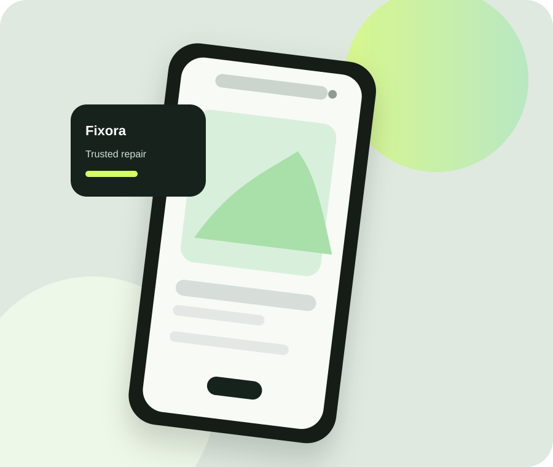

📱
01
Screen Repair
Cracked glass, display lines and touch issues handled with careful fitting and testing.
View service →Lahore • Mobile Repair Studio
Fast, careful and transparent mobile repair for screens, batteries, charging ports and software issues — without the guesswork.

01 — About Fixora
Fixora Mobile Care is a fictional Lahore-based repair studio created to make phone repairs feel simple and professional. We combine careful diagnostics, quality parts and clear communication so customers know what is happening before any work begins.
From cracked displays to charging problems, our team focuses on practical solutions and a clean handover. No confusing jargon. No surprise add-ons.
Explore our story ↗02 — What We Do
Focused services for the issues customers face most often.
Cracked glass, display lines and touch issues handled with careful fitting and testing.
View service →Fresh batteries for devices that drain quickly, shut down early or struggle to hold charge.
View service →Performance cleanup, update issues, setup help and common software troubleshooting.
View service →03 — Why Choose Us
We make the whole experience easier — from the first diagnosis to the moment you pick up your phone.
We explain the issue in plain language before work begins.
Buttons, touch, charging and core functions are tested before handover.
Simple communication when a repair needs extra time or parts.
Eligible repair work includes a limited service warranty for peace of mind.
04 — Customer Reviews
“My screen was fixed the same day and the team explained every step. The phone came back looking clean and working perfectly.”
“I thought I needed a new phone because the battery was terrible. Fixora replaced it and saved me a lot of money.”
“Fast response, professional service and no surprise charges. I liked that they tested everything before giving my phone back.”
05 — Get in Touch
Send your details and a quick description of the issue. This demo form is for the internship project only.
Main Boulevard, Lahore
+92 300 555 0188
hello@fixora.pk